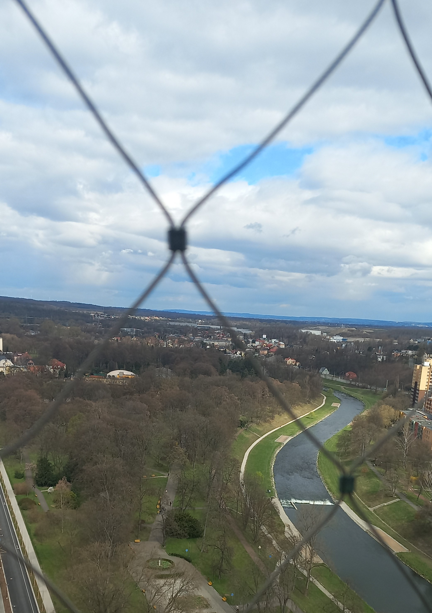
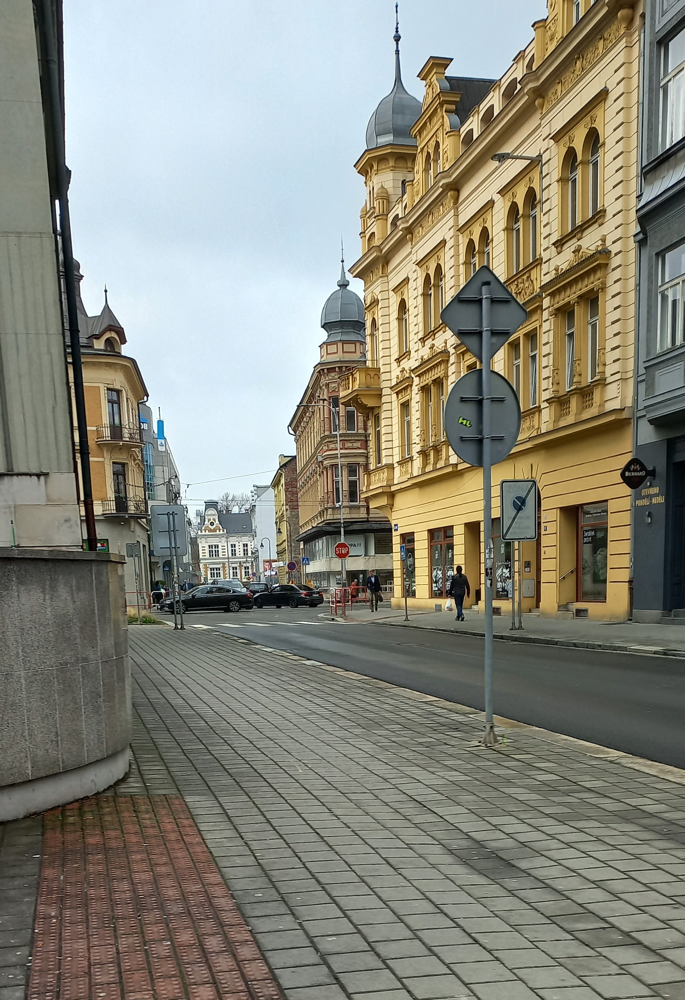
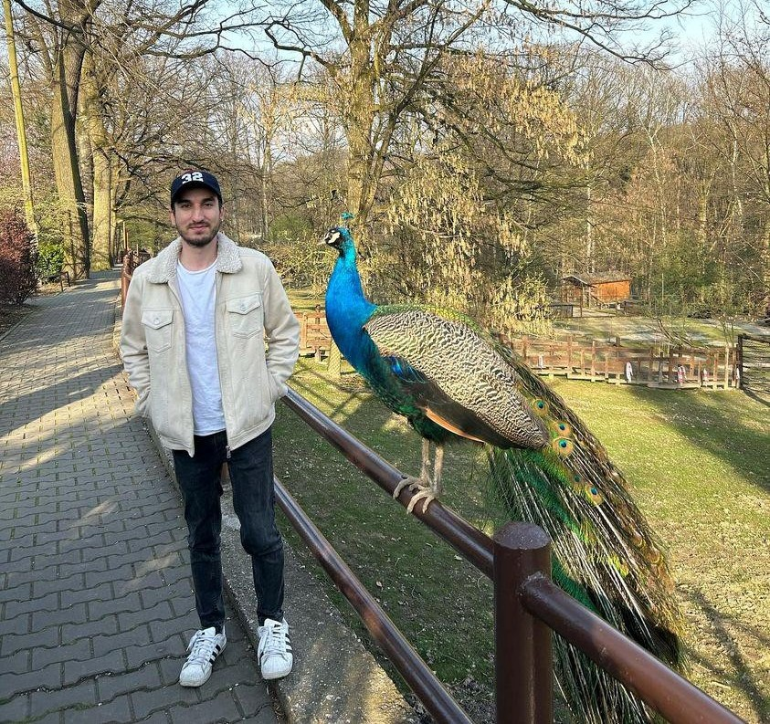
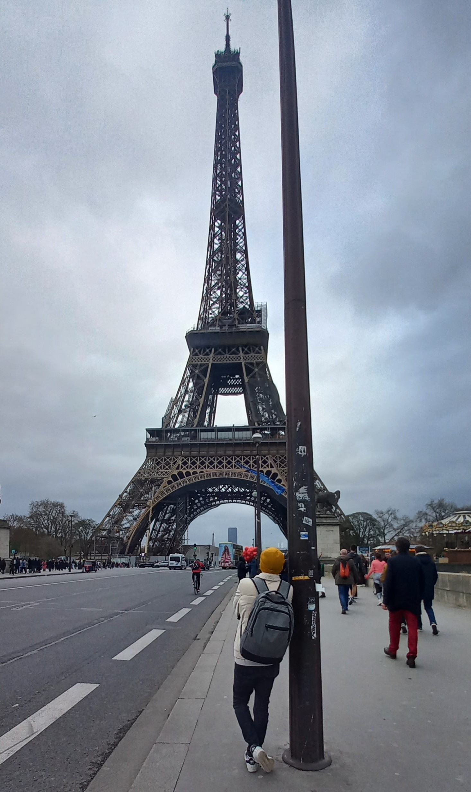
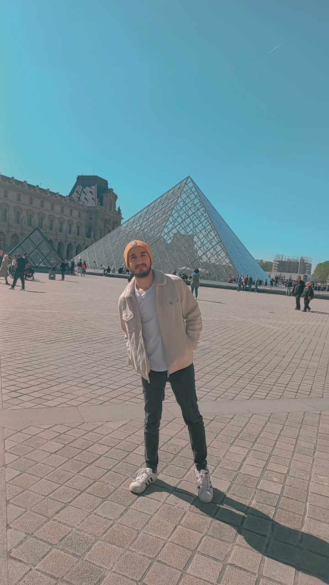

Visited Places
-
Ostrava
When I first arrived in Ostrava, it was very interesting because it was completely different from the structure of Turkey. When I first arrived in Ostrava, I visited the New Town Hall and the city center. I went around the city and shopping malls. I also took a walk by the Ostravice River.It was also quite pleasant to visit the Ostrava zoo. I quite liked the city and house structures of Ostrava and it was interesting.
   -
Prague
Prague was one of the most beautiful cities I have visited in my life. It seemed more interesting to me because I like Franz Kafka. I visited places such as Kafka's Rotating Head, Kafka Museum, Infinity Books in a library, Prague Castle, the Dancing House, the Charles Bridge, the Astronomical Clock Tower. It was one of the most enjoyable cities to visit.


-
Paris
My visit to Paris was also one of the places I enjoyed the most. When I arrived in Paris, my first visit was to the Eiffel Tower. I came across a very beautiful sight. Then I went to the Louvre Museum. I visited the Champs-Elysees Avenue. It was quite enjoyable.
 